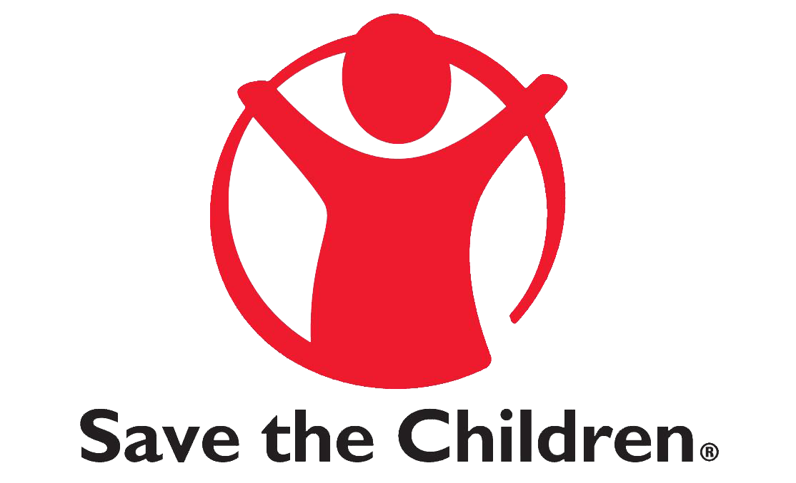

• To create demand for SRHR-HIV services by migrants, AYP and SWs in Chipata and Katete migration - affected communities by end of June, 2020.
• To enhance the Supply and Accessibility of responsive SRHR-HIV services for Migrants, AYP and SWs in Chipata and Katete migration affected communities by end of June, 2020.
• To create an enabling environment for migrants, AYP and SWs in breaking barriers to address physical, social and economic challenges to health by end of June, 2020.
Project funded by

The SRHR – HIV Knows No Borders project has provided basis for Sexual Reproductive Health services accessibility, acceptability, appropriateness, effectiveness, and equity for migrants, AYP and SWs in the three districts of Eastern Province being Chipata City, Chadiza and Katete towns realizing the fact that migrants, adolescents, young people and sex workers have unique health needs, and by virtue of their continuous travel, experience difficulty in accessing SRHR – HIV services.
Lack of knowledge on access to SRHR – HIV services hindered their rights to their quality health needs and compromising impact of on-going SRHR – HIV programmes on migrants, adolescents, young people’s health outcomes.
Adolescents and Young People (AYP), Migrants and Sex Workers are on the underserved groups most subjected to abuse and coerced sex. In view of this circumstance, AYP, migrants and SWs face greater health risks, early and unwanted pregnancies, STIs including HIV.